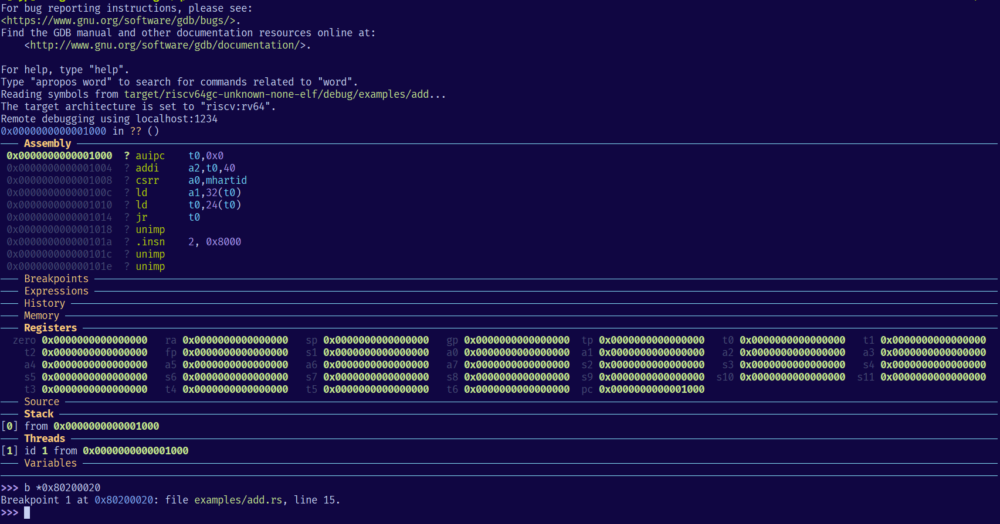
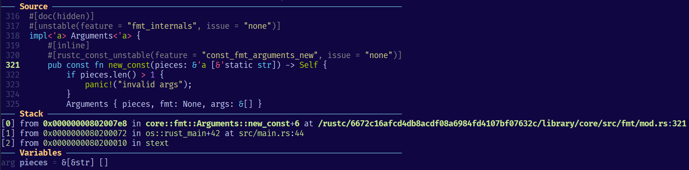
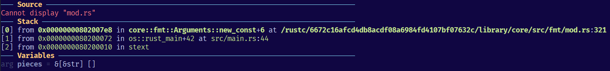
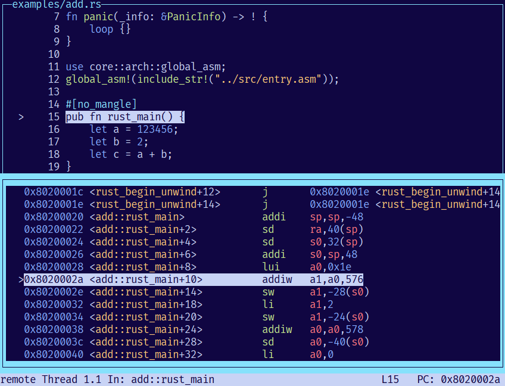

安装 GDB
时间：2024-04-25
6 月更新：
apt install gdb-multiarch可以直接安装调试多架构的 gdb，无需源码编译。minGW-w64 也可用（
pacman -S gdb-multiarch）。支持的架构如下 (通过set arch查看)：ARC600, A6, ARC601, ARC700, A7, ARCv2, EM, HS, arm, armv2, armv2a, armv3, armv3m, armv4, armv4t, armv5, armv5t, armv5te, xscale, ep9312, iwmmxt, iwmmxt2, armv5tej, armv6, armv6kz, armv6t2, armv6k, armv7, armv6-m, armv6s-m, armv7e-m, armv8-a, armv8-r, armv8-m.base, armv8-m.main, armv8.1-m.main, armv9-a, arm_any, avr, avr:1, avr:2, avr:25, avr:3, avr:31, avr:35, avr:4, avr:5, avr:51, avr:6, avr:100, avr:101, avr:102, avr:103, avr:104, avr:105, avr:106, avr:107, bfin, cris, crisv32, cris:common_v10_v32, csky, csky:ck510, csky:ck610, csky:ck801, csky:ck802, csky:ck803, csky:ck807, csky:ck810, csky:ck860, csky:any, frv, tomcat, simple, fr550, fr500, fr450, fr400, fr300, ft32, ft32b, h8300, h8300h, h8300s, h8300hn, h8300sn, h8300sx, h8300sxn, hppa1.0, i386, i386:x86-64, i386:x64-32, i8086, i386:intel, i386:x86-64:intel, i386:x64-32:intel, iq2000, iq10, lm32, m16c, m32c, m32r, m32rx, m32r2, m68hc11, m68hc12, m68hc12:HCS12, m68k, m68k:68000, m68k:68008, m68k:68010, m68k:68020, m68k:68030, m68k:68040, m68k:68060, m68k:cpu32, m68k:fido, m68k:isa-a:nodiv, m68k:isa-a, m68k:isa-a:mac, m68k:isa-a:emac, m68k:isa-aplus, m68k:isa-aplus:mac, m68k:isa-aplus:emac, m68k:isa-b:nousp, m68k:isa-b:nousp:mac, m68k:isa-b:nousp:emac, m68k:isa-b, m68k:isa-b:mac, m68k:isa-b:emac, m68k:isa-b:float, m68k:isa-b:float:mac, m68k:isa-b:float:emac, m68k:isa-c, m68k:isa-c:mac, m68k:isa-c:emac, m68k:isa-c:nodiv, m68k:isa-c:nodiv:mac, m68k:isa-c:nodiv:emac, m68k:5200, m68k:5206e, m68k:5307, m68k:5407, m68k:528x, m68k:521x, m68k:5249, m68k:547x, m68k:548x, m68k:cfv4e, mep, h1, c5, MicroBlaze, mn10300, am33, am33-2, moxie, msp:14, MSP430, MSP430x11x1, MSP430x12, MSP430x13, MSP430x14, MSP430x15, MSP430x16, MSP430x20, MSP430x21, MSP430x22, MSP430x23, MSP430x24, MSP430x26, MSP430x31, MSP430x32, MSP430x33, MSP430x41, MSP430x42, MSP430x43, MSP430x44, MSP430x46, MSP430x47, MSP430x54, MSP430X, n1, n1h, n1h_v2, n1h_v3, n1h_v3m, nios2, nios2:r1, nios2:r2, or1k, or1knd, rl78, rs6000:6000, rs6000:rs1, rs6000:rsc, rs6000:rs2, powerpc:common64, powerpc:common, powerpc:603, powerpc:EC603e, powerpc:604, powerpc:403, powerpc:601, powerpc:620, powerpc:630, powerpc:a35, powerpc:rs64ii, powerpc:rs64iii, powerpc:7400, powerpc:e500, powerpc:e500mc, powerpc:e500mc64, powerpc:MPC8XX, powerpc:750, powerpc:titan, powerpc:vle, powerpc:e5500, powerpc:e6500, rx, rx:v2, rx:v3, s12z, s390:64-bit, s390:31-bit, sh, sh2, sh2e, sh-dsp, sh3, sh3-nommu, sh3-dsp, sh3e, sh4, sh4a, sh4al-dsp, sh4-nofpu, sh4-nommu-nofpu, sh4a-nofpu, sh2a, sh2a-nofpu, sh2a-nofpu-or-sh4-nommu-nofpu, sh2a-nofpu-or-sh3-nommu, sh2a-or-sh4, sh2a-or-sh3e, sparc, sparc:sparclet, sparc:sparclite, sparc:v8plus, sparc:v8plusa, sparc:sparclite_le, sparc:v9, sparc:v9a, sparc:v8plusb, sparc:v9b, sparc:v8plusc, sparc:v9c, sparc:v8plusd, sparc:v9d, sparc:v8pluse, sparc:v9e, sparc:v8plusv, sparc:v9v, sparc:v8plusm, sparc:v9m, sparc:v8plusm8, sparc:v9m8, tic6x, v850:old-gcc-abi, v850e3v5:old-gcc-abi, v850e2v4:old-gcc-abi, v850e2v3:old-gcc-abi, v850e2:old-gcc-abi, v850e1:old-gcc-abi, v850e:old-gcc-abi, v850:rh850, v850e3v5, v850e2v4, v850e2v3, v850e2, v850e1, v850e, v850-rh850, vax, xstormy16, xtensa, z80, z80-strict, z80-full, r800, gbz80, z180, z80n, ez80-z80, ez80-adl, aarch64, aarch64:llp64, aarch64:ilp32, aarch64:armv8-r, alpha, alpha:ev4, alpha:ev5, alpha:ev6, bpf, xbpf, ia64-elf64, ia64-elf32, Loongarch64, Loongarch32, mips, mips:3000, mips:3900, mips:4000, mips:4010, mips:4100, mips:4111, mips:4120, mips:4300, mips:4400, mips:4600, mips:4650, mips:5000, mips:5400, mips:5500, mips:5900, mips:6000, mips:7000, mips:8000, mips:9000, mips:10000, mips:12000, mips:14000, mips:16000, mips:16, mips:mips5, mips:isa32, mips:isa32r2, mips:isa32r3, mips:isa32r5, mips:isa32r6, mips:isa64, mips:isa64r2, mips:isa64r3, mips:isa64r5, mips:isa64r6, mips:sb1, mips:loongson_2e, mips:loongson_2f, mips:gs464, mips:gs464e, mips:gs264e, mips:octeon, mips:octeon+, mips:octeon2, mips:octeon3, mips:xlr, mips:interaptiv-mr2, mips:micromips, riscv, riscv:rv64, riscv:rv32, tilegx, tilegx32, auto
GDB 需要针对 riscv64 平台编译的版本才能用来调试内核，其二进制文件为 riscv64-unknown-elf-gdb。
rCore 教程的配置环境一章给了 GDB 预编译二进制的下载链接，但那是在 2020 年版本了。
最大的缺点在于不支持 TUI 插件和 dbg-dashboard。
所以，为了愉快地调试代码，需要自己编译最新的 GDB。GDB 编译流程在老教程里是有介绍的，但仍然有内容过时。
下面我记录自己的编译命令，基于 Ubuntu 系统：
# 1. 首先一些依赖项，其中 libncurses5-dev 提供了 TUI 库（--enable-tui 需要它)
sudo apt-get install libncurses5-dev texinfo libreadline-dev # python python-dev
# 这里的 python 和 python-dev 并不必须是 python2，我本地的默认 python 就是 3，可以编译成功并且正常使用
# 2. 检查本地 python 路径
which python # 或者 ll $(which python) 查看链接到那个 python，我的是 /usr/local/sbin/python -> /usr/bin/python3
# 3. 下载最新的 GDB 源码，清华镜像地址： https://mirrors.tuna.tsinghua.edu.cn/gnu/gdb/?C=M&O=D
wget https://mirrors.tuna.tsinghua.edu.cn/gnu/gdb/gdb-14.2.tar.xz
# 4. 解压缩它（你可以使用 tar 命令，我懒得查和记，因为我一直使用 ouch ），源码在 $PWD/gdb-14.2/ 文件夹下
ouch d gdb-14.2.tar.xz
# 5. 进入这个目录，并在里面创建另一个目录，用来存放编译结果和二进制文件
cd gdb-14.2
mkdir build-riscv64
# 适当阅读一下 gdb-14.2/gdb/README，这可是 GDB 的官方安装说明
# 6. 进入 gdb-14.4/build-riscv64 目录，准备编译
cd build-riscv64
../configure --prefix=/root/qemu/gdb-14.2/build-riscv64 --with-python=/usr/local/sbin/python --target=riscv64-unknown-elf --enable-tui=yes
# 7. 编译并生成二进制文件
make -j$(nproc)
make install
# 8. 编译好的 GDB 存放在 build-riscv64/bin/ 目录下，你可以只保留这个目录，然后添加这个目录到环境变量。
# 确认 GDB 可以运行
./bin/riscv64-unknown-elf-gdb --version
# 在 `~/.bashrc` 文件中，添加以下一行，然后开启新的终端（或者重启终端），那么
export PATH="/root/qemu/gdb-14.2/build-riscv64/bin:$PATH"
# 9. 安装 gdb-dashboard：仅仅是下载一个 python 文件到 ~/.gdbinit 来做 gdb 的启动拓展
wget -P ~ https://github.com/cyrus-and/gdb-dashboard/raw/master/.gdbinit

使用 rust-gdb
修改一下作业中 os 目录下的 Makefile 脚本（make gdb）：
BOOTLOADER := ../bootloader/rustsbi-qemu.bin
# KERNEL ENTRY
KERNEL_ENTRY_PA := 0x80200000
TARGET := riscv64gc-unknown-none-elf
MODE := debug
BIN := os
ELF := target/$(TARGET)/$(MODE)/$(BIN)
# GDB wrapper to handle virtual path to core lib and types display in Rust
GDB_PATH := /root/qemu/gdb-14.2/build-riscv64/bin/riscv64-unknown-elf-gdb
gdb := RUST_GDB=$(GDB_PATH) rust-gdb
# Emit asm code
OBJDUMP := rust-objdump --arch-name=riscv64 --disassemble
gdb:
@tmux new-session -d \
"qemu-system-riscv64 -machine virt -nographic -bios $(BOOTLOADER) -device loader,file=$(ELF),addr=$(KERNEL_ENTRY_PA) -s -S" && \
tmux split-window -h "$(gdb) -ex 'file $(ELF)' -ex 'set arch riscv:rv64' -ex 'target remote localhost:1234'" && \
tmux swap-pane -U && \
tmux -2 attach-session -d
kernel:
@qemu-system-riscv64 -machine virt -nographic -bios $(BOOTLOADER) -device loader,file=$(ELF),addr=$(KERNEL_ENTRY_PA)
disasm:
@$(OBJDUMP) $(ELF) | bat -l asm
gdbserver:
@qemu-system-riscv64 -machine virt -nographic -bios $(BOOTLOADER) -device loader,file=$(ELF),addr=$(KERNEL_ENTRY_PA) -s -S
gdbclient:
@$(gdb) -ex 'file $(ELF)' -ex 'set arch riscv:rv64' -ex 'target remote localhost:1234'
.PHONY: gdb disasm gdbserver gdbclient kernel
注意：os ELF 文件中包含 /rustc/hash 开头的虚拟路径，需要 rust-gdb 来帮助 GDB 识别。而
rust-gdb 直接调用 gdb 命令，如果你本地的 riscv64-unknown-elf-gdb 不符号链接成 gdb，那么可以使用 RUST_GDB
环境变量来指定它的路径。 rust-gdb 还可以更好地显示 Rust 的类型，所以这对于 rCore 是必须的：）

rust-gdb
无 rust-gdb如果你看到 GDB 无法找到源码，那么需要检查在哪里丢弃的符号，包括但不限于
- cargo 编译选项是 debug 还是 release
- 调试版本尽量选择 debug
- 虽然在 release profile 中，也可以配置成
strip = false来避免去除符号和源码路径，但优化会导致指令与实际代码对应不上
linker.ld脚本把 debug 段丢弃了（/DISCARD/ { *(.debug*) }）objdump传递了 strip 参数
丢弃符号通常只是为了减小二进制的体积。但对于开发来说，没有符号和源码路径就意味着无法调试。那么如何知道符号完整呢？
cargo nm -- -l可以罗列 ELF 文件内的符号及其源码路径（该命令来自cargo-binutils，已经在 rCore 环境配置安装了）- GDB 命令
info functions可以罗列或者筛选符号
比如对于 discard 了 debug 段的 linker.ld，cargo nm --bin hello -- -l 查看一个 ELF，符号的源码路径被替换了
#![allow(unused)] fn main() { 00000000806001ce t core::fmt::Arguments::new_v1::h741c19aff15e0fbc 3f7tq8l5guw80ras:0 ... 0000000080600ef0 t core::fmt::Formatter::pad_integral::write_prefix::hb49bd2387561b763 core.33f7ee81a6b78e39-cgu.0:0 ... 0000000080600154 T user_lib::exit::h4061419aa5f7b4c2 000000008060013c T user_lib::write::h5d49bbdc9aa408de 0000000080600480 T user_lib::console::print::h5cc98a09cc243fc5 0000000080600168 t user_lib::syscall::syscall::he49ce1904c1bcccf 3eg2fvct9z14yo4c:0 00000000806001aa t user_lib::syscall::sys_exit::h4a9cfe4324c7eae4 3eg2fvct9z14yo4c:0 0000000080600182 t user_lib::syscall::sys_write::h68b8e5bcf011de72 3eg2fvct9z14yo4c:0 00000000806000dc T user_lib::clear_bss::hde0b07a7b88782c7 00000000806003b2 T <core::slice::iter::IterMut<T> as core::iter::traits::iterator::Iterator>::next::h97941033b59dc358 0000000080600000 T _start 00000000806031c0 B end_bss 0000000080600044 T main 000000008060084a T rust_begin_unwind 00000000806031c0 B start_bss }
通过删除或者注释，把 .debug 段保留：
SECTIONS
{
/DISCARD/ : {
*(.eh_frame)
/* *(.debug*) */
}
}
然后重新编译（注意，由于 cargo 似乎不会因为修改 ld 文件来触发重新编译，所以修改一下相应的 rs 文件来编译，或者清理 target 目录来编译），就可以看到符号的源码路径完整：
#![allow(unused)] fn main() { 000000008060072a t core::fmt::Arguments::new_v1::h741c19aff15e0fbc /rustc/6672c16afcd4db8acdf08a6984fd4107bf07632c/library/core/src/fmt/mod.rs:331 ... 0000000080600e84 t core::fmt::Formatter::pad_integral::write_prefix::hb49bd2387561b763 /rustc/6672c16afcd4db8acdf08a6984fd4107bf07632c/library/core/src/fmt/mod.rs:1293 ... 0000000080600154 T user_lib::exit::h4061419aa5f7b4c2 /root/qemu/user/src/lib.rs:60 000000008060013c T user_lib::write::h5d49bbdc9aa408de /root/qemu/user/src/lib.rs:56 0000000080600480 T user_lib::console::print::h5cc98a09cc243fc5 /root/qemu/user/src/console.rs:14 0000000080600168 t user_lib::syscall::syscall::he49ce1904c1bcccf /root/qemu/user/src/syscall.rs:3 00000000806001aa t user_lib::syscall::sys_exit::h4a9cfe4324c7eae4 /root/qemu/user/src/syscall.rs:24 0000000080600182 t user_lib::syscall::sys_write::h68b8e5bcf011de72 /root/qemu/user/src/syscall.rs:20 00000000806000dc T user_lib::clear_bss::hde0b07a7b88782c7 /root/qemu/user/src/lib.rs:36 00000000806003b2 T <core::slice::iter::IterMut<T> as core::iter::traits::iterator::Iterator>::next::h97941033b59dc358 /rustc/6672c16afcd4db8acdf08a6984fd4107bf07632c/libr ary/core/src/slice/iter/macros.rs:156 0000000080600000 T _start /root/qemu/user/src/lib.rs:30 00000000806031c0 B end_bss 0000000080600044 T main /root/qemu/user/src/bin/hello.rs:13 000000008060084a T rust_begin_unwind /root/qemu/user/src/lang_items.rs:4 00000000806031c0 B start_bss }
GDB - tui 命令
首先，由于上述自编译的 GDB 已经自身具有 TUI 模式，所以自己查看说明 help tui：
tui disable -- Disable TUI display mode.
tui enable -- Enable TUI display mode.
tui focus, fs, focus -- Set focus to named window or next/prev window.
tui layout, layout -- Change the layout of windows.
tui new-layout -- Create a new TUI layout.
tui refresh, refresh -- Refresh the terminal display.
tui reg -- TUI command to control the register window.
tui window -- Text User Interface window commands.
回到原 tui 模式（区别于 gdb-dashboard）
>>> tui refresh
退出 tui 模式
>>> tui disable
调整上方显示的内容：汇编指令(asm)、源代码 (src)、寄存器 (regs) 以及将它们放在哪里 (split/prev/next)
tui layout asm -- Apply the "asm" layout.
tui layout next -- Apply the next TUI layout.
tui layout prev -- Apply the previous TUI layout.
tui layout regs -- Apply the TUI register layout.
tui layout split -- Apply the "split" layout.
tui layout src -- Apply the "src" layout.
比如进入原 tui 模式会把窗口分割成两个区域：源码和命令
tui layout next 可以把源码区域换成下一个面板（asm）
tui layout split 可以从上方的源码区域切割一个区域，然后拥有了 src、asm 以及命令三个框
此时上下方向键会联动 src 和 asm 来展示内容，但这无法再用它们输入上/下一个历史命令
因此需要 Ctrl-p 和 Ctrl-n 再命令框输入上/下一个历史命令
原 tui 模式非常方便来查看当前指令所在的完整的 src/asm 上下文。

GDB - dashboard 命令
安装了上述 dashboard 插件，则可以使用 dashboard 命令，使用 help dashboard 查看详细信息：
dashboard -configuration -- Dump or save the dashboard configuration.
dashboard -enabled -- Enable or disable the dashboard.
dashboard -layout -- Set or show the dashboard layout.
dashboard -output -- Set the output file/TTY for the whole dashboard or single modules.
dashboard -style -- Access the stylable attributes.
dashboard assembly -- Configure the assembly module, with no arguments toggles its visibility.
dashboard breakpoints -- Configure the breakpoints module, with no arguments toggles its visibility.
dashboard expressions -- Configure the expressions module, with no arguments toggles its visibility.
dashboard history -- Configure the history module, with no arguments toggles its visibility.
dashboard memory -- Configure the memory module, with no arguments toggles its visibility.
dashboard registers -- Configure the registers module, with no arguments toggles its visibility.
dashboard source -- Configure the source module, with no arguments toggles its visibility.
dashboard stack -- Configure the stack module, with no arguments toggles its visibility.
dashboard threads -- Configure the threads module, with no arguments toggles its visibility.
dashboard variables -- Configure the variables module, with no arguments toggles its visibility.
GDB 似乎会在命令没有歧义的时候支持短命令，所以 da 或者 dash 与 dashboard 等价。一些命令解释：
dashboard：dashboard 不会固定高度，所以你输入的命令会把 dashboard 挤压掉，所以需要这个命令让 dashboard 位置复原dashboard history（或者把 history 换成类似的区域名称）：显示/隐藏 那个区域dashboard -layout assembly source：只显示 assembly 和 source 区域dashboard -layout assembly breakpoints expressions !history memory registers source stack !threads variables： 在不需要的区域前写!来排除掉那些区域，比如排除掉 history 和 threadsdash -layout !：恢复默认的布局，显示所有区域
dashboard -configuration ~/.gdbinit.d/init：可将将当前所显示的布局保存到配置文件，下次开启 GDB 只会显示它们。 需要手动创建~/.gdbinit.d目录。通常修改区域之后，使用这一步来永久化- 搭配 tui 命令：
- dashboard 可以同时观察到不同角度的调试信息，但如果想单独查看源码的上下文，可以使用
tui focus src来专注于查看当前源码的上下文，在那里上下方向键和翻页键直接控制源码页面，然后tui disable回到 dashboard。
- dashboard 可以同时观察到不同角度的调试信息，但如果想单独查看源码的上下文，可以使用
GDB - info 命令
>>> help info
info, inf, i
Generic command for showing things about the program being debugged.
List of info subcommands:
info address -- Describe where symbol SYM is stored.
info all-registers -- List of all registers and their contents, for selected stack frame.
info args -- All argument variables of current stack frame or those matching REGEXPs.
info auto-load -- Print current status of auto-loaded files.
info auxv -- Display the inferior's auxiliary vector.
info bookmarks -- Status of user-settable bookmarks.
info breakpoints,
info b -- Status of specified breakpoints (all user-settable breakpoints if no argument).
info classes -- All Objective-C classes, or those matching REGEXP.
info common -- Print out the values contained in a Fortran COMMON block.
info connections -- Target connections in use.
info copying -- Conditions for redistributing copies of GDB.
info dcache -- Print information on the dcache performance.
info display -- Expressions to display when program stops, with code numbers.
info exceptions -- List all Ada exception names.
info extensions -- All filename extensions associated with a source language.
info files -- Names of targets and files being debugged.
info float -- Print the status of the floating point unit.
info frame, info f -- All about the selected stack frame.
info frame-filter -- List all registered Python frame-filters.
info functions -- All function names or those matching REGEXPs.
info guile, info gu -- Prefix command for Guile info displays.
info inferiors -- Print a list of inferiors being managed.
info line -- Core addresses of the code for a source line.
info locals -- All local variables of current stack frame or those matching REGEXPs.
info macro -- Show the definition of MACRO, and it's source location.
info macros -- Show the definitions of all macros at LINESPEC, or the current source location.
info main -- Get main symbol to identify entry point into program.
info mem -- Memory region attributes.
info module -- Print information about modules.
info modules -- All module names, or those matching REGEXP.
info os -- Show OS data ARG.
info pretty-printer -- GDB command to list all registered pretty-printers.
info probes -- Show available static probes.
info proc -- Show additional information about a process.
info program -- Execution status of the program.
info record, info rec -- Info record options.
info registers,
info r -- List of integer registers and their contents, for selected stack frame.
info scope -- List the variables local to a scope.
info selectors -- All Objective-C selectors, or those matching REGEXP.
info sharedlibrary, info dll -- Status of loaded shared object libraries.
info signals, info handle -- What debugger does when program gets various signals.
info skip -- Display the status of skips.
info source -- Information about the current source file.
info sources -- All source files in the program or those matching REGEXP.
info stack, info s -- Backtrace of the stack, or innermost COUNT frames.
info static-tracepoint-markers -- List target static tracepoints markers.
info symbol -- Describe what symbol is at location ADDR.
info target -- Names of targets and files being debugged.
info tasks -- Provide information about all known Ada tasks.
info terminal -- Print inferior's saved terminal status.
info threads -- Display currently known threads.
info tracepoints,
info tp -- Status of specified tracepoints (all tracepoints if no argument).
info tvariables -- Status of trace state variables and their values.
info type-printers -- GDB command to list all registered type-printers.
info types -- All type names, or those matching REGEXP.
info unwinder -- GDB command to list unwinders.
info variables -- All global and static variable names or those matching REGEXPs.
info vector -- Print the status of the vector unit.
info vtbl -- Show the virtual function table for a C++ object.
info warranty -- Various kinds of warranty you do not have.
info watchpoints -- Status of specified watchpoints (all watchpoints if no argument).
info win -- List of all displayed windows.
info xmethod -- GDB command to list registered xmethod matchers.
info functions 命令
使用 info functions 可以查看被定义的函数符号，比如对 Rust 来说：
#![allow(unused)] fn main() { >>> info functions All defined functions: ... 此处省略展示的源码路径和行号预览 Non-debugging symbols: 0x0000000080200000 _start 0x0000000080200000 skernel 0x0000000080200000 stext 0x0000000080200010 <&T as core::fmt::Display>::fmt 0x0000000080200032 <&T as core::fmt::Display>::fmt 0x000000008020004a core::fmt::Write::write_char 0x0000000080200178 core::fmt::Write::write_fmt 0x000000008020019c core::ptr::drop_in_place<core::fmt::Error> 0x00000000802001ac <core::fmt::Error as core::fmt::Debug>::fmt 0x00000000802001d0 <os::console::Stdout as core::fmt::Write>::write_str 0x000000008020025a os::console::print 0x00000000802002aa rust_begin_unwind 0x0000000080200354 os::sbi::shutdown 0x00000000802003a0 rust_main 0x0000000080201000 etext 0x0000000080201000 srodata }
这里的重点在于 Non-debugging symbols，你可以用两种相同的方式使用它们，以 rust_main 为例，
b *0x00000000802003a0 和 b rust_main 都可以用来给同一处函数入口位置打上断点。对于
Rust 中的 trait 实现，像 b <os::console::Stdout as core::fmt::Write>::write_str
这样包含尖括号和空格的函数路径是合法的命令。
该命令还支持正则搜索函数路径，比如 info functions console 列出函数路径中包含 console 的函数：
#![allow(unused)] fn main() { >>> info functions console All functions matching regular expression "console": File /root/.cargo/registry/src/rsproxy.cn-0dccff568467c15b/sbi-rt-0.0.2/src/legacy.rs: 22: static fn sbi_rt::legacy::console_putchar(usize) -> usize; File /rustc/6672c16afcd4db8acdf08a6984fd4107bf07632c/library/core/src/fmt/mod.rs: 166: static fn core::fmt::Write::write_char<os::console::Stdout>(*mut os::console::Stdout, char) -> core::result::Result<(), core::fmt::Error>; 210: static fn core::fmt::Write::write_fmt::{impl#1}::spec_write_fmt<os::console::Stdout>(*mut os::console::Stdout, core::fmt::Arguments) -> core::result::Result<(), core::fmt::Error>; 194: static fn core::fmt::Write::write_fmt<os::console::Stdout>(*mut os::console::Stdout, core::fmt::Arguments) -> core::result::Result<(), core::fmt::Error>; File /rustc/6672c16afcd4db8acdf08a6984fd4107bf07632c/library/core/src/ptr/mod.rs: 509: static fn core::ptr::drop_in_place<os::console::Stdout>(*mut os::console::Stdout); File src/console.rs: 15: static fn os::console::print(core::fmt::Arguments); 7: static fn os::console::{impl#0}::write_str(*mut os::console::Stdout, &str) -> core::result::Result<(), core::fmt::Error>; File src/sbi.rs: 2: static fn os::sbi::console_putchar(usize); }
这对于快速定位到待打断点的特定目录或函数名特别方便，因为它提供了源码路径和行号，以及函数签名，从而又为 trait functions 添加了一种方式来打断点。
至此，比如给 os::console::Stdout 的 write_str 方法打断点，以下 4 种方式等价：
b src/console.rs:7b os::console::{impl#0}::write_strb <os::console::Stdout as core::fmt::Write>::write_strb 0x00000000802001d0
由于支持正则表达式，所以 info functions console.*write 可以直接定位到 src/console.rs:7：
#![allow(unused)] fn main() { >>> info functions console.*write All functions matching regular expression "console.*write": File src/console.rs: 7: static fn os::console::{impl#0}::write_str(*mut os::console::Stdout, &str) -> core::result::Result<(), core::fmt::Error>; }
info locals 命令
#![allow(unused)] fn main() { ─── Source ───────────────────────────────────────────────────────────────────────────────────────────────────────────────────────────────────────────────────────────────── 4 struct Stdout; 5 6 impl Write for Stdout { 7 fn write_str(&mut self, s: &str) -> fmt::Result { ! 8 for c in s.chars() { 9 console_putchar(c as usize); 10 } 11 Ok(()) 12 } 13 } ─── Stack ────────────────────────────────────────────────────────────────────────────────────────────────────────────────────────────────────────────────────────────────── [0] from 0x0000000080200f30 in os::console::{impl#0}::write_str+122 at src/console.rs:9 [1] from 0x000000008020143a in core::fmt::write+374 at library/core/src/fmt/mod.rs:1144 [2] from 0x000000008020115c in core::fmt::Write::write_fmt::{impl#1}::spec_write_fmt<os::console::Stdout>+30 at /rustc/6672c16afcd4db8acdf08a6984fd4107bf07632c/library/core/src/fmt/mod.rs:211 [3] from 0x0000000080201136 in core::fmt::Write::write_fmt<os::console::Stdout>+20 at /rustc/6672c16afcd4db8acdf08a6984fd4107bf07632c/library/core/src/fmt/mod.rs:215 [4] from 0x0000000080200f76 in os::console::print+60 at src/console.rs:16 [5] from 0x000000008020007e in os::rust_main+54 at src/main.rs:44 [6] from 0x0000000080200010 in stext ─── Variables ────────────────────────────────────────────────────────────────────────────────────────────────────────────────────────────────────────────────────────────── arg self = 0x80213f67: os::console::Stdout, s = "hi!!!!\n" loc c = 33 '!', iter = core::str::iter::Chars {iter: core::slice::iter::Iter<u8> {ptr: core::ptr::non_null::NonNull<u8> {po… ──────────────────────────────────────────────────────────────────────────────────────────────────────────────────────────────────────────────────────────────────────────── >>> info locals c = 33 '!' iter = core::str::iter::Chars { iter: core::slice::iter::Iter<u8> { ptr: core::ptr::non_null::NonNull<u8> { pointer: 0x80202003 }, end_or_len: 0x80202007, _marker: core::marker::PhantomData<&u8> } } }
info locals 会打印出当前作用域的局部变量。可以注意到，rust-gdb 很好地显示了结构体内部的情况。
程序调试命令
GDB 的调试命令中，比较常用的有：
| 命令 | 说明 |
|---|---|
si | 运行下个指令；si n 往下运行 n 个指令 |
n | 运行下一行；这是源码里的下一行，尤其是，不会进入函数调用 |
finish | 执行到当前帧栈返回；也就是运行到当前函数结束 |
b xxx | 设置断点；上面介绍 info functions 时，给了四种等价的方式给一个函数打断点 |
c | 运行到下一个断点 |
delete breakpoints | 删除所有断点；通常结合 info breakpoints 查看断点 id， delete breakpoints id 删除指定断点 |
start | 运行程序到程序入口（即 Rust 的 main 函数） |
q | 退出 GDB（或者两次 Ctrl-d） |
help | help 任何命令或者子命令 查看说明 |
子栈帧
[1] break for src/main.rs:142 hit 1 times
[1.1] at 0x0000000080201e16 in src/main.rs:145
[1.2] at 0x0000000080201f9c in src/main.rs:145
在 GDB 中，当你看到 [1]、[1.1] 和 [1.2] 这样的输出时，这些表示程序的调用栈（call stack）的不同层级。调用栈是程序执行过程中，函数调用顺序的堆栈结构。下面是对这些层级的解释：
-
[1]：这是顶层栈帧，通常表示当前正在执行的函数或代码块。在这个例子中，[1]表示在src/main.rs文件的第 145 行的代码正在执行。 -
[1.1]和[1.2]：这些是子栈帧，它们表示在[1]栈帧中调用的其他函数或代码块。在 Rust 这类语言中，由于编译器优化或内联（inline）的特性，一个函数的代码可能会被插入到调用它的函数的代码中，导致在同一个源代码行号上出现多个内存地址。这可能发生在以下情况：- 一个函数被内联到另一个函数中，导致多个内存地址对应同一源代码行。
- 在同一行代码中，有多个不同的函数调用或代码块被执行。
在 [1.1] 和 [1.2] 的情况下，它们都指向 src/main.rs:145，但具有不同的内存地址（0x0000000080201e16 和 0x0000000080201f9c）。这意味着虽然它们在源代码中位于同一行，但可能是由不同的函数调用或代码路径导致的。
要理解这些子栈帧的具体情况，你可以使用 GDB 的命令来进一步探索：
frame [number]：切换到指定的栈帧。例如，frame 1.1会切换到[1.1]栈帧。info frame：显示当前栈帧的详细信息，包括函数名、源代码文件和行号、以及局部变量等。list：在当前栈帧中列出源代码，可以帮助你查看具体的代码行和周围的上下文。where或bt（backtrace）：显示整个调用栈的概览，包括所有栈帧的列表。
通过这些命令，你可以更深入地了解程序在特定断点时的执行状态和调用路径。